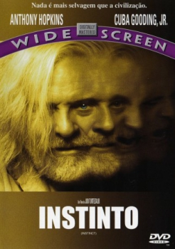

Instinto (1999)


Nothing is more savage than civilization.

Avaliação (TMDb):


6.4/10 (423 votos)
Avaliação (Usuário):
Outro Título:Instinct
País:United States, 126 minutos
Idiomas falados:Inglês, Espanhol, Português
Gênero(s):Suspense
Diretor(s):Jon Turteltaub
Codec:MPEG-2 (DVD)
Número: 1749
Sinopse:
Psquiatra fica encarregado de analisar a sanidade de antropologista assassino. No decorrer do trabalho, ele acaba aprendendo muito com o homem que todos consideram louco.
Elenco:
Anthony Hopkins, Cuba Gooding Jr., Donald Sutherland, Maura Tierney, George Dzundza, John Ashton, John Aylward, Doug Spinuzza, Thomas Q. Morris, Vivienne Sendaydiego
Tipo de mídia: DVD5,
Legendas: Inglês, Espanhol, Português
Alugado: Não
Tela: 2.35:1